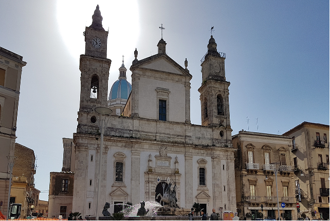
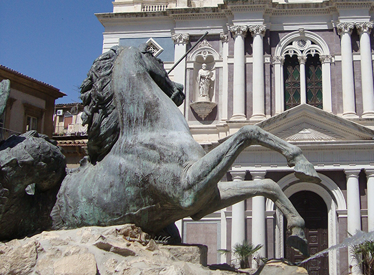
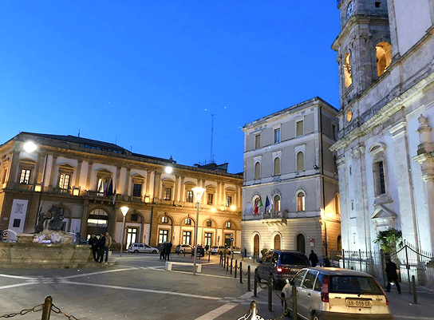
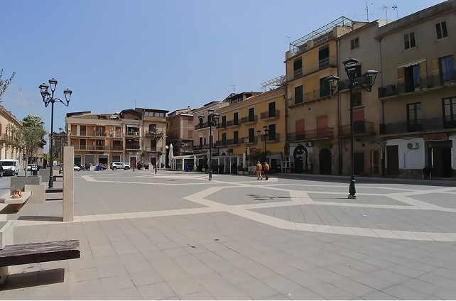

la piazza, simbolo della città
Piazza Garibaldi è il cuore storico e sociale della città di Caltanissetta, un luogo dove storia, tradizione e vita quotidiana si incontrano in modo armonioso. Ampia e accogliente, la piazza rappresenta uno dei punti più importanti della città e un luogo di ritrovo per cittadini e visitatori. Qui si respira un’atmosfera autentica, fatta di incontri, passeggiate e momenti di relax che raccontano la vita della comunità nissena. Al centro della piazza domina la maestosa Cattedrale di Santa Maria la Nova, principale edificio religioso della città.
La cattedrale, con la sua facciata elegante e le sue decorazioni artistiche, rappresenta uno dei simboli più importanti di Caltanissetta. Intorno alla piazza sorgono palazzi storici e edifici istituzionali che testimoniano lo sviluppo urbano della città nel corso dei secoli. Le facciate chiare degli edifici e l’ampio spazio aperto creano un ambiente armonioso e piacevole, ideale per ammirare l’architettura e l’atmosfera del centro storico.


tra storia e tradizione
La sera, le luci della piazza illuminano la cattedrale e gli edifici storici, creando un’atmosfera suggestiva e accogliente. Oltre ai monumenti principali, Piazza Garibaldi offre numerosi scorci caratteristici che raccontano la storia e le tradizioni della città. Le strade che si diramano dalla piazza conducono a piccoli negozi, botteghe e locali tipici, dove è possibile scoprire i sapori e le tradizioni locali. Passeggiando nei dintorni si possono osservare degli angoli nascosti che rendono questa zona del centro storico particolarmente affascinante.
La piazza è anche un importante luogo di incontro per eventi culturali e manifestazioni cittadine. Durante l’anno ospita celebrazioni religiose, feste tradizionali e iniziative pubbliche che coinvolgono l’intera comunità. In queste occasioni Piazza Garibaldi si trasforma in uno spazio vivace e partecipato, dove cittadini e visitatori condividono momenti di festa e tradizione. Questo continuo alternarsi di quotidianità ed eventi rende la piazza uno dei luoghi più dinamici della città. Infine, Piazza Garibaldi non è soltanto un luogo da visitare, ma uno spazio da vivere pienamente.
